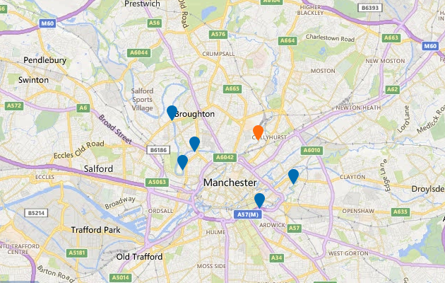

Latest river level information for Irk at Collyhurst Weir
1.30pm on Tuesday 16 May 2017
River levels here are forecast to stay within this river's normal range during the next 36 hours.
River levels at this location
We have high confidence in this forecast
What effect could these levels have on nearby areas?
-
5.1m Highest level ever recorded here during Dec 2015 flooding.
Show on the graph. See map of area that flooded -
5.0m Sep 2007 flood level.
Show on the graph. See map of area that flooded -
4.8m Flooding of property possible at River Irk at Cheetham Hill.
Show on the graph. See map of area that could flood -
4.2m Flooding of property possible at River Irk at Kendall Road.
Hide from the graph. See map of area that could flood -
2.9m A26 crossroads floods.
Show on the graph -
2.7m Flooding of low lying land starts.
Hide from the graph
View a nearby measuring station
Select a marker on the map to view measuring station.

![]()
How might river levels affect flood risk?
How are river levels measured?
How are forecast levels produced?
Your feedback will help us improve this service.